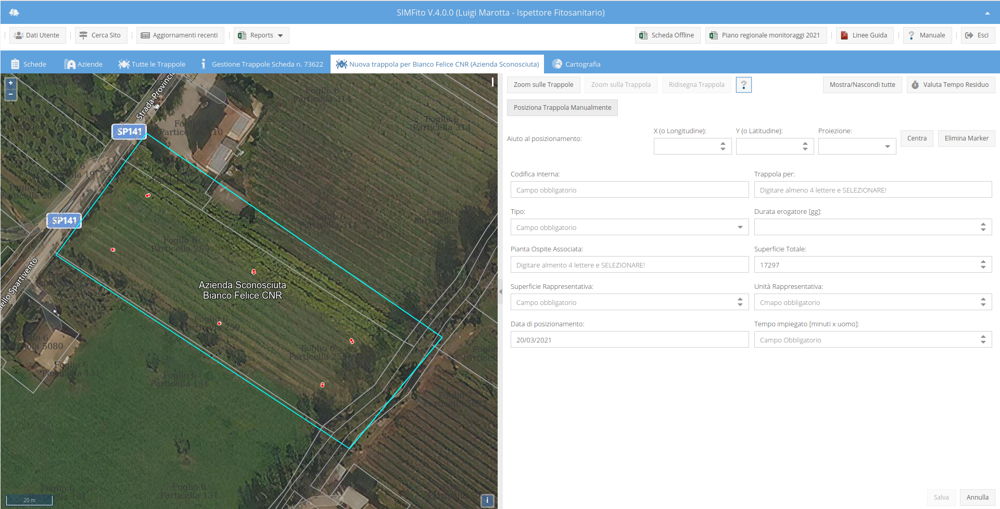
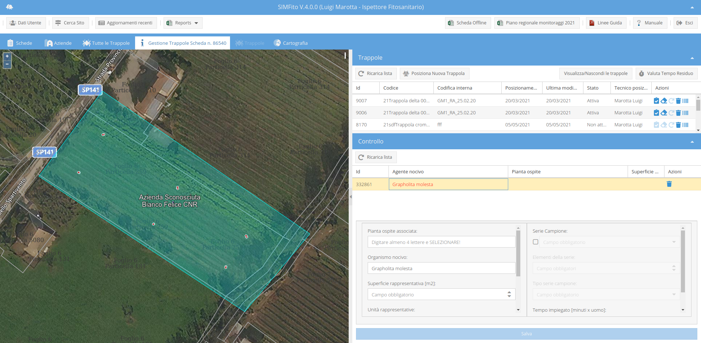

A partire dalla versione 4.0.0 di SIMFito, tutte le operazioni relative alla trappole sono state collegate alla creazione di una scheda. Quindi ogni operazione di: posizionamento, controllo e rimozione sarà associato ad una scheda. Per ogni scheda creata sarà possibile accedere alla gestione trappole attraverso l'apposita icona nella colonna delle azioni della tabella delle schede.
Creata la scheda ed associata al sito in questo tab compaiono:
Nella toolbar della lista delle trappole sono, infine, presenti 4 pulsanti:
Per posizionare una trappola bisogna:
Nel caso in cui si avessero le oordinate della trappola può essere utilizzata la sezione "Aiuto al posizionamento" che consentirà di visualizzare in mappa il punto relativo alle coordinate inserite. Attenzione, in ogni caso, il punto dovr&agreve; essere confermato utilizzando la procedura sopra elencata!.

Cliccando sull'apposita icona nella colonna delle azioni della tabella delle trappole, se la trappola è in uso e non è stata possizionata con la scheda attuale, sarà aggiunta una riga nella colonna del controllo per la quale saranno precaricate le seguenti informazioni:

Per rimuovere una trappola utilizzare làapposita icona nella colonna delle azioni. Un form chiederà di indicare il tempo impiegato per l'operazione.